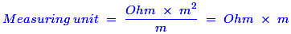

- The property of a conductor due to which it passes electric current is called
Conductance is the ability of electricity to flow a certain path. Resistance of an electrical conductor is the opposition to the passage of an electric current through that conductor. Inductance is the property of a conductor by which a change in electric current flowing through it induces a electromotive force in both the conductor itself and in any nearby conductors. Reluctance is a property that opposes to follow magnetic flux in a magnetic field,.
- Conductance is reciprocal of
Conductance means that allows the electric current to flow through a electric current carrying conductor. So, the reciprocal of conductance is that the opposition of the electric current flow through a conductor. It is nothing but the resistance which opposes the electric current flowing through the conductor.
- The resistance of conductor varies inversely as
Due to the larger cross sectional area of the conductor, more electrons are available to carry the current. This means that the resistance is lower. Hence, the resistance of conductor is inversely proportional to cross sectional area.
- With rise in temperature the resistance of semi conductors
In a semi-conductor, as the temperature rises, electrons are set free to move around. The conductance in semiconductors is due to the holes and the free electrons. As the temperature rises it creates more free electron and holes. This gives a negative temperature coefficient of resistance in the semiconductors.
- Which of the following material has nearly zero temperature co-efficient of resistance ?
In manganin, there is no change in resistance with the change in temperature. Hence, it has nearly zero temperature co-efficient of resistance.
- Varistors are
It is an electronic component which is developed by semiconductor materials. It has non linear voltage-current characteristics. Hence, according to the voltage variation or electric current variation, it gives a resistance as non-linear.
- In a circut a 33 ohm resistor carries a electric current of 2 amp. The voltage across the resistor is
- Two resistor are said to be connected in series when
In a series connection of resistors, the electric current flowing through the first resistor has no other way to go and it should pass through the second resistor and the third and so on. Hence, same electric current passes through the resistors in a series circuit.
- In a series circuit with unequal resistances
We know that the electric current flowing through the series resistance circuit is same. According to the Ohm’s law , the voltage drop across the resistance is the product of electric current and resistance. Hence, the voltage drop is high across the higher resistance and it is low across the lower resistance.
- An ohmmeter is an electrical instrument used to measure
An instrument which is used for direct measurement of the resistance of a material is called ohmmeter. Usually it gives the value of resistance in terms of Ohms.
- The resistance of a few meters of wire conductor in closed electrical circuit is
When wire conductor is made for smooth electric current carrying then the resistance of the wire conductor is kept low as near to zero. So a few meters of wire conductor in closed electrical circuit is practically zero.
- A closed switch has a resistance of
If a switch is closed, then that means a short circuit has occurred. This provides to flow the infinite electric current in that circuit. We know that the resistance = V / I. Hence, if electric current I is infinite means then the resistance is zero.
- Heat in a conductor is produced on the passage of electric current due to
All electric current carrying conductors have its own resistance. That resistance dissipates the power at the rate of I2R. It means that while a electric current flowing through a conductor, it generates I2R time power loss and this power loss generates the heat in that conductor.
- Which of the following quantities remain the same in all parts of a series circuit
In a series connection of resistors, the electric current flowing through the first resistor has no other way to go and it should pass through the second resistor and the third and so on. Hence, same electric current passes through the resistors in a series circuit.
- If a wire conductor of 0.2 ohm resistance is doubled in length, its resistance becomes
We know that the expression of Resistance R = (ρL) / a. So, if length increases by two times, then the resistance also increases by two times because both are directly proportional to each other.
- Resistance of a tungsten lamp __________________ as applied voltage increases
Tungsten has a positive temperature coefficient. That means its resistance increases if the temperature will increase. When a voltage is applied across the filament, electric current flows through it. Then temperature increases due to the electric current flow. Hence, the resistance also increases.
- Two bulbs of 500 W and 200 W rated at 250 V will have resistance ratio as
Let we calculate the resistance of each bulb. We know that the power is expressed in terms of voltage and resistance as P = V2 / R.
Now, the resistance of first lamp is R1 = V2 / P1 = 2502 / 500 = 125 Ohm. The resistance of second resistance is R2 = V2 / P2 = 2502 / 200 = 312.5 Ohm. If we take ratio between these two resistances, we get R1 / R2 = 125 / 312.5 = 2 / 5. Hence, the ratio is 2:5. - Bulbs in street lighting are all connected in
- Specific resistance of a substance is measured in
We know that the expression of specific resistance (OR) resistivity as ρ = (R × A) / L.
Where,
R – resistance in Ohms,
A – cross sectional area in m2,
L – length in m.
So, the measuring unit of specific resistance can be calculated by

Hence, the specific resistance is measured in Ohm – m. - If a parallel circuit is opened in the main line, the electric current
If the main line of a parallel circuit is opened, then the open circuit has occurred. So, there is no path to flow the electrons (current) to next loop or to reach the ground. Hence, the electric current is zero in all branches which are all connected in that main line.
Design with  by SARU TECH
by SARU TECH
www.sarutech.com
Content Credited to electrical4u.com
Online Electrical Engineering Study Site